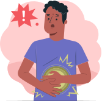
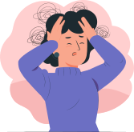
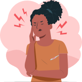
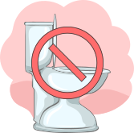
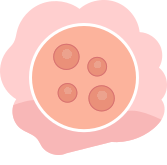

Como saber se estou com Sepse?

Esses são alguns dos fatores de risco para Sepse.
Você tem mais de 60 anos ou menos de 1 ano?
Está com imunidade baixa?
Tem doença crônica no pulmão ou fígado?
Tem diabetes ou AIDS?
Tirou o baço?
Está com alguma infecção agora?
Está falando com dificuldade ou percebe-se com pensamentos desorganizados?
Tem dor muscular ou febre?
Está sem urinar?
Tem ansiedade ou perda de consciência?
Tem manchas na pele ou está com palidez?
